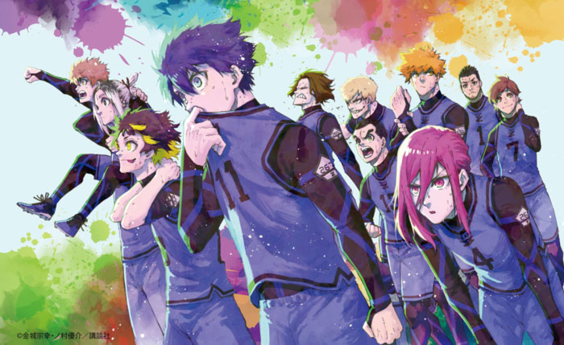

Sinopsis de Blue Lock
Tras una desastrosa derrota en la Copa Mundial de 2018, el equipo japonés está pasando por un mal momento. ¿Qué es lo que les falta? Un delantero que sea el mejor, alguien que pueda guiarles hasta la victoria. La federación japonesa está decidida a crear un jugador con una sed de gol única, alguien "egoísta" con el balón, un jugador que pueda ser capaz de dar la vuelta a un partido que está por perderse... Y para ello reúnen a 300 de las mejores jóvenes promesas de Japón. ¿Quién resultará el elegido como futuro líder del equipo? ¿Quién será capaz de plantar cara con su fuerza y su ego a cualquiera que se ponga en su camino? ¿Quién será ese jugador más egoísta que nadie?
